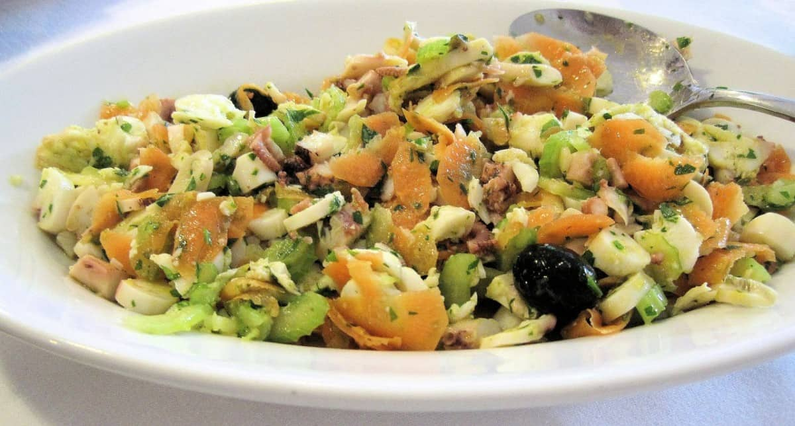

Cuando la temperatura sube, las ganas de platos súper calientes disminuye, ¿a poco no? Y en esas ocasiones queremos algo rico que nos quite el hambre sin complicaciones y este salpicón de marisco cumple con el objetivo.
Si ya te cansaste de las ensaladas frías o simplemente tienes ganas de comida de mar, esta receta de salpicón de marisco te va a quedar como anillo al dedo, porque además de ser fácil y deliciosa, se puede personalizar a tus gustos y sobre todo, a tu bolsillo.
Aquí les dejamos la receta y no se olviden de revisar los tips para que el platillo sea todo un éxito. ¡Comencemos!

Cómo hacer salpicón de marisco en casa
Sigue el paso a paso para preparar un plato súper fresco y con todo el sabor del mar.
Raciones 4 porciones
Calorías 115kcal
Ingredientes
- 300 g mejillones frescos y limpios
- 250 g camarones crudos
- 8 palitos de surimi
- 1 pata de pulpo cocida
- ½ pimiento verde lavado y sin tallo
- ½ pimiento rojo lavado y sin tallo
- ½ cebolla
- 50 g aceitunas negras o verdes
- 8 cda aceite de oliva
- 4 cda soperas de vinagre de jerez
- 100 ml vino blanco
- 1 hoja de laurel
- 1 pizca de pimentón dulce
- sal y pimienta al gusto
- perejil fresco picado al gusto
Elaboración paso a paso
- En una olla grande agrega el vino blanco con la hoja de laurel y los mejillones limpios. Tapa y calienta a fuego medio-alto.
- Cuando comience a hervir espera 2-3 minutos hasta que los mejillones abran. Escurre, deja enfriar y reserva.
- En otra olla limpia, coloca ½ litro de agua y lleva al punto de ebullición. Agrega 1 cucharada de sal y cuando comience a hervir de nuevo, vierte los camarones.
- Deja cocer por 2-3 minutos. Escurre y deja enfriar. Cuando puedas agarrarlos sin problema, pela los camarones y retira la vena negra. Reserva.
- Retira las semillas y tiras blancas de los pimientos. Pica la cebolla y los pimientos en cubos pequeños.
- Pica el pulpo, surimi y los camarones en trozos pequeños. Retira las conchas de los mejillones.
- En un bowl mediano, agrega el aceite, vinagre, sal y una pizca de pimentón. Revuelve muy bien hasta que los ingredientes se integren de manera homogénea.
- En un recipiente grande mezcla los mariscos, pulpo, surimi, aceitunas, pimientos, cebolla y perejil picado al gusto.
- Tapa el recipiente con envoltura plástica y mete al refrigerador por 30 minutos.
- Retira del refrigerador, vierte la vinagreta, revuelve y sirve. Disfruta.
Salpicón de marisco: tips ganadores
- Si no estás seguro de cómo se limpian los mejillones, en esta nota encontrarás el paso a paso completo para hacerlo en casa, antes de empezar la receta.
- Como te comentamos, el salpicón de marisco es un platillo que se puede adaptar muy fácilmente. Puedes reemplazar los camarones por langostinos, agregar otras verduras como pepino, cebolla o aguacate, cambiar las aceitunas por cebollas encurtidas o agregar pescados como merluza o rape.
- Si quieres ahorrar tiempo, puedes comprar camarones cocidos.
- El salpicón se puede preparar 1 día antes y ponerse a refrigeración; los sabores serán más intensos pero súper ricos.
- Recuerda que la vinagreta se vierte justo antes de servir el salpicón, para asegurarnos de que las verduras no se aguaden y pierdan su textura crujiente.
- Este platillo es perfecto como entrada o como plato fuerte para una comida saludable y muy nutritiva.
¿Quieres más recetas deliciosas con mariscos? Te dejamos una selección de platillos increíbles:
- Cómo hacer Curry de mango y mariscos
- Receta de arroz con mariscos peruano
- Cómo hacer almejas a la marinera
- Receta de mejillones en salsa de tomate: picante y natural
- Gambas envueltas en tocino, receta fácil
Excelentes recetas, fáciles de preparar para quienes amamos la cocina